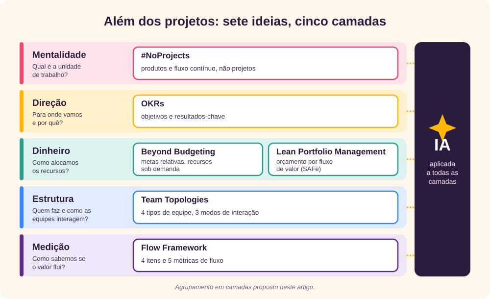
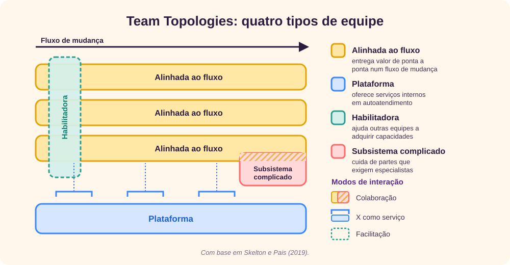

O conceito de gestão de projetos
Para o Project Management Institute (PMI), um projeto é “um esforço temporário empreendido para criar um produto, serviço ou resultado único”. [1] As duas palavras que importam são temporário, porque o projeto tem início e fim definidos, e único, porque o que ele entrega não é a repetição de uma rotina. É isso que separa um projeto da operação, que é contínua e repetitiva.
Gestão de projetos, por sua vez, é “a aplicação de conhecimentos, habilidades, ferramentas e técnicas às atividades do projeto para cumprir os seus requisitos”. [1] Acima do projeto, o PMI organiza mais dois níveis:
- Programa: um grupo de projetos relacionados, gerenciados de forma coordenada para obter benefícios que não seriam obtidos separadamente.
- Portfólio: o conjunto de projetos, programas e operações gerenciados como um grupo para alcançar os objetivos estratégicos da organização.
O guia de referência do PMI, o PMBOK Guide, mudou muito nas últimas edições. A definição de projeto continua a mesma desde 1996, mas a forma de gerenciá-lo deixou de ser um conjunto de processos e passou a ser um conjunto de princípios orientados a valor:
| Edição | Foco | Estrutura | Abordagens |
|---|---|---|---|
| 6ª (2017) | Processos e entregas | 5 grupos de processos, 10 áreas de conhecimento, 49 processos | Preditiva, com o Agile Practice Guide publicado junto |
| 7ª (2021) | Princípios e entrega de valor | 12 princípios e 8 domínios de desempenho | Preditiva, adaptativa e híbrida em pé de igualdade |
| 8ª (2025) | Valor, com estrutura de volta | 6 princípios, 7 domínios de desempenho e processos não prescritivos | Todas, com mais espaço para IA, PMO e aquisições |
Essa evolução já diz muito sobre o tema deste artigo. O próprio PMI reconhece que o centro da gestão não é mais cumprir o plano, e sim entregar valor. [1] [2] A pergunta que fica é se a ideia de projeto, algo temporário e com fim, é a melhor unidade para gerir um software que, se der certo, nunca termina.
Uma breve história da gestão de projetos
Grandes obras existem desde as pirâmides, mas a gestão de projetos como disciplina, com técnicas, papéis e associações próprias, nasceu no século XX, na engenharia e na indústria de defesa. [3]

- Henry Gantt populariza o gráfico de barras para planejar e acompanhar a produção. O gráfico de Gantt continua, mais de cem anos depois, a ser a imagem mais associada a um projeto. [3]
- O Projeto Manhattan mostra como coordenar milhares de pessoas, fornecedores e frentes de pesquisa sob um prazo rígido, e consolida a ideia de um gerente com autoridade sobre um esforço temporário. [3]
- A DuPont e a Remington Rand criam o método do caminho crítico (CPM), e a Marinha dos Estados Unidos, com a Booz Allen Hamilton, cria o PERT para o programa de mísseis Polaris. Pela primeira vez, o cronograma vira um modelo matemático. [4] [5]
- Nascem as associações profissionais: o IPMA na Europa, em 1965, e o PMI nos Estados Unidos, em 1969. [3]
- Winston Royce descreve o desenvolvimento de software em fases sequenciais, o que mais tarde seria chamado de cascata. Ironicamente, o próprio Royce escreveu que essa versão pura “é arriscada e convida ao fracasso”, e recomendou iterar. [6]
- Takeuchi e Nonaka descrevem equipes que desenvolvem produtos como num scrum do rúgbi, e Ken Schwaber e Jeff Sutherland apresentam o Scrum para software em 1995. [7] [8]
- O PMI publica a primeira edição do PMBOK Guide e o governo britânico lança o PRINCE2. A gestão de projetos se padroniza e ganha certificações. [3]
- Dezessete profissionais de software assinam o Manifesto Ágil. [9]
- O PMI publica o Agile Practice Guide com a Agile Alliance, reescreve o PMBOK em torno de princípios e valor na 7ª edição e, na 8ª, incorpora a IA. [1] [2] [17]
Um detalhe dessa história explica boa parte das críticas a seguir: as técnicas clássicas nasceram em obras, fábricas e programas militares, onde o escopo pode ser definido com antecedência e o resultado é físico. Elas foram levadas para o software, onde nenhuma das duas coisas costuma ser verdade.
As críticas à gestão de projetos aplicada à TI
Em 1975, Fred Brooks já avisava que o software é diferente: é invisível, muda o tempo todo e cresce em complexidade. A sua lei mais famosa diz que “adicionar pessoas a um projeto de software atrasado o atrasa ainda mais”. [10] Desde então, os números sobre projetos de TI não são animadores:
| Estudo | Amostra | O que encontrou |
|---|---|---|
| Standish Group, CHAOS (1994) [11] | 8.380 projetos de 365 empresas | 16,2% bem-sucedidos, 52,7% com problemas de prazo, custo ou escopo e 31,1% cancelados. |
| Flyvbjerg e Budzier, Harvard Business Review (2011) [13] | 1.471 projetos de TI | Estouro médio de custo de 27%, mas um em cada seis projetos foi um “cisne negro”, com estouro médio de 200% no custo e de quase 70% no prazo. |
| McKinsey e Universidade de Oxford (2012) [14] | Mais de 5.400 projetos de TI | Os grandes projetos estouraram em média 45% o orçamento e 7% o prazo, e entregaram 56% menos valor do que o previsto. |
Os números precisam ser lidos com cuidado. O relatório CHAOS foi duramente criticado por Eveleens e Verhoef, que mostraram que a sua definição de sucesso mede apenas se a estimativa inicial foi cumprida, e não se o projeto gerou valor. [12] Mas os estudos acadêmicos que vieram depois confirmaram o essencial: o risco dos projetos de TI está nas caudas, nos poucos projetos que dão muito errado, e o maior prejuízo não é de prazo, é de valor.
As críticas mais frequentes à gestão de projetos aplicada à TI podem ser agrupadas assim:
- A premissa da previsibilidade. O planejamento detalhado pressupõe que os requisitos são conhecidos. Em software, a incerteza no início é enorme: Barry Boehm mostrou que as estimativas iniciais podem errar por um fator de até quatro, para mais ou para menos, o que ficou conhecido como cone da incerteza. [16] Em domínios complexos, causa e efeito só ficam claros depois, e o certo é experimentar, não planejar tudo antes. [15]
- O sucesso medido pelo plano, não pelo resultado. Um projeto pode terminar no prazo e no orçamento e entregar algo que ninguém usa. O triângulo de prazo, custo e escopo mede a obediência ao plano, e não o valor para o negócio.
- Equipes temporárias. O projeto monta uma equipe, entrega e a desfaz. O conhecimento sai com as pessoas, e o sistema passa para uma equipe de sustentação que não o construiu. O projeto termina, mas o software continua.
- Lotes grandes e risco no fim. Quando tudo é entregue de uma vez, os problemas aparecem tarde, quando já é caro corrigi-los.
- Financiamento por projeto. Como o dinheiro vem uma vez por ano e por projeto, as áreas aprendem a pedir grande, iniciar muitas frentes ao mesmo tempo e defender o escopo inteiro. O resultado é trabalho em andamento demais e entrega de menos.
Vale uma ressalva justa: muitas dessas críticas atingem a má prática, e não o PMI em si, que desde 2017 trata as abordagens adaptativas como legítimas. E Flyvbjerg, um dos críticos mais duros, não propõe abandonar o planejamento: propõe planejar devagar, com base em projetos semelhantes do passado, e executar rápido, em módulos pequenos e repetíveis. [34]
Gestão de projetos tradicional × metodologia ágil
O Manifesto Ágil, de 2001, respondeu diretamente às críticas da seção anterior com quatro valores: [9]
Indivíduos e interações mais que processos e ferramentas.
Software em funcionamento mais que documentação abrangente.
Colaboração com o cliente mais que negociação de contratos.
Responder a mudanças mais que seguir um plano.Ou seja, mesmo havendo valor nos itens à direita, valorizamos mais os itens à esquerda.
A diferença mais visível entre as duas abordagens está no que é fixo e no que é estimado. Na abordagem tradicional, o escopo é fixado no início, e prazo e custo são estimados a partir dele. Na ágil, o triângulo se inverte: prazo e custo são fixados em ciclos curtos, e o escopo se ajusta ao que gera mais valor.
O diagrama vem do DSDM (Dynamic Systems Development Method), um dos primeiros métodos ágeis, criado em 1994 no Reino Unido por um consórcio de empresas usuárias e fornecedoras de tecnologia, o DSDM Consortium, hoje Agile Business Consortium. A inversão do triângulo é um dos seus fundamentos: o DSDM fixa prazo, custo e também qualidade desde o início, e deixa variar apenas as funcionalidades, priorizadas pela técnica MoSCoW, que separa o que é obrigatório (must), o que deveria entrar (should), o que poderia entrar (could) e o que fica de fora desta vez (won’t). [37]
| Aspecto | Tradicional (preditivo) | Ágil (adaptativo) |
|---|---|---|
| Premissa | Os requisitos são conhecidos e estáveis | Os requisitos emergem com o aprendizado |
| Planejamento | Detalhado, no início | Contínuo, em ciclos curtos |
| O que é fixo | O escopo | O prazo e o custo de cada ciclo |
| Entregas | No fim, em um grande lote | Incrementais e frequentes |
| Mudança | Controlada por um comitê | Esperada e bem-vinda |
| Papel do gerente | Planejar, controlar e cobrar | Dividido entre product owner, que prioriza, e facilitador, que remove impedimentos |
| Medida de sucesso | Cumprir o plano | Valor entregue e aprendizado |
| Onde funciona melhor | Escopo estável: infraestrutura, migrações, exigências regulatórias | Produtos digitais e problemas complexos |
Na prática, quase ninguém está num extremo. O Agile Practice Guide e o PMBOK tratam as abordagens como um espectro, e a maioria das organizações trabalha de forma híbrida. [1] [17] O modelo Cynefin ajuda a escolher: em problemas complicados, que um especialista consegue analisar, o planejamento funciona; em problemas complexos, só a experimentação revela o caminho. [15]
O ágil mudou a forma de trabalhar dentro da equipe, mas muitas vezes não mudou o que está em volta dela. A Forrester chamou isso de water-scrum-fall: requisitos e orçamento definidos em cascata no início, Scrum no meio e implantação em cascata no fim. [18] O orçamento anual por projeto, as metas de prazo e escopo e as equipes temporárias continuaram iguais. É justamente aí que atuam as abordagens da próxima seção.
Além da gestão atual de projetos
Nos últimos quinze anos surgiu um conjunto de ideias que não discute como gerenciar melhor um projeto, mas se o projeto é a unidade certa para gerir a TI. Cada uma ataca uma camada diferente da organização, e elas se complementam:

#NoProjects (Allan Kelly)
- Origem: 2013
- Camada: mentalidade
- Substitui: o projeto como unidade de trabalho
A hashtag #NoProjects surgiu no Twitter em 2013, usada por Joshua Arnold, Allan Kelly e Steve Smith. Kelly se tornou o principal autor do movimento com os livros Project Myopia e Continuous Digital, ambos de 2018. [19] [20]
O argumento central é simples: o software bem-sucedido não termina. Enquanto for usado, ele vai precisar de mudanças, correções e melhorias. Tratá-lo como projeto cria datas de término artificiais, desfaz equipes que acabaram de aprender o domínio e mede o sucesso pelo cumprimento do plano, e não pelo valor. Kelly chama essa visão de “miopia de projeto”. [19]
No lugar, ele propõe equipes estáveis que trabalham continuamente sobre um produto ou serviço, financiadas como uma capacidade, e não por projeto, e avaliadas pelos resultados que geram.
![Comparação entre projeto e produto. Equipe: no projeto é montada e desfeita no fim; no produto é estável e de longa duração. Trabalho: no projeto as pessoas vão até o trabalho; no produto o trabalho vai até a equipe. Financiamento: por projeto, aprovado uma vez, contra contínuo, por capacidade, revisto a cada trimestre. Sucesso: prazo, custo e escopo, contra resultados para o negócio e o cliente. Fim: entregue e passado para a sustentação, contra evolui enquanto gerar valor. Risco: concentrado no fim, contra diluído em entregas pequenas.](rc_images/FuturoProjetosProduto.svg)
Cuidado: o nome provoca, mas o movimento não diz que nenhum projeto deve existir. Ele vale para o desenvolvimento contínuo de produtos digitais. Uma mudança de data center ou a troca de um ERP, com começo e fim claros, continuam sendo projetos.
Flow Framework (Mik Kersten, Project to Product)
- Origem: 2018
- Camada: medição
- Substitui: métricas de projeto e de atividade
Em Project to Product, Mik Kersten defende que as empresas estão gerenciando a era do software com ferramentas da era industrial. [21] A sua proposta é gerenciar fluxos de valor, que são todo o caminho de uma demanda até chegar ao cliente, e medir esse fluxo com uma linguagem que o negócio e a TI entendam.
Kersten define quatro tipos de item que passam pelo fluxo e cinco métricas para acompanhá-lo:

A métrica de distribuição é a mais reveladora para a gestão. Os quatro tipos de item disputam a mesma capacidade: se toda ela vai para funcionalidades, o débito técnico e os riscos se acumulam até que defeitos e incidentes passam a consumir a equipe. Kersten também insiste que as métricas de fluxo precisam ser ligadas a resultados do negócio, como receita, custo, qualidade e satisfação do cliente e da equipe.
Beyond Budgeting
- Origem: 1998
- Camada: dinheiro
- Substitui: o orçamento anual fixo
O Beyond Budgeting Round Table (BBRT) nasceu em 1998, e Jeremy Hope e Robin Fraser publicaram o livro que deu nome ao movimento em 2003. [22] Os casos mais conhecidos são o banco sueco Handelsbanken, que abandonou o orçamento tradicional nos anos 1970, e a norueguesa Statoil, hoje Equinor, onde Bjarte Bogsnes liderou a mudança. [23]
A ideia central de Bogsnes é que o orçamento tradicional mistura três coisas que deveriam estar separadas:
- Meta: o que queremos alcançar. Deve ser ambiciosa e, de preferência, relativa, por exemplo em comparação com concorrentes ou com o próprio histórico.
- Previsão: o que achamos que vai acontecer. Deve ser realista e revista sempre, num rolling forecast.
- Alocação de recursos: quanto liberar e quando. Deve acontecer quando a necessidade aparece, e não uma vez por ano.
O movimento resume a proposta em doze princípios, seis de liderança e seis de processos de gestão. Para a TI, a consequência é direta: se o dinheiro deixa de ser preso a projetos aprovados uma vez por ano, fica possível financiar equipes e produtos de forma contínua e mudar de rumo no meio do ano sem um novo processo de aprovação.
OKRs
- Origem: anos 1970
- Camada: direção
- Substitui: metas de prazo e escopo
Os Objectives and Key Results nasceram na Intel com Andy Grove, que os descreveu em High Output Management, de 1983. [24] John Doerr levou o método para o Google em 1999 e o popularizou com o livro Measure What Matters, de 2018. [25] A fórmula de Doerr é: “Vou [objetivo] medido por [resultados-chave]”.
A mudança para a TI está no que se mede. Em vez de “entregar o projeto do novo portal até junho”, o OKR descreve o resultado esperado. O exemplo abaixo é apenas ilustrativo: foi criado para este artigo, e a situação, os números e as metas são fictícios.
Exemplo ilustrativo
Objetivo: tornar a contratação de seguros pelo celular simples o bastante para dispensar o corretor.
Resultados-chave: reduzir o tempo médio de contratação de 25 para 8 minutos; aumentar de 30% para 55% as contratações concluídas sem ajuda; manter a nota de satisfação acima de 4,5.
Assim, a equipe ganha liberdade para descobrir o que construir, e o escopo vira uma hipótese, não um compromisso. Cuidados: resultados-chave que são apenas tarefas (“lançar o portal”), OKRs demais e o uso dos OKRs na avaliação individual e no bônus, que Doerr recomenda separar para não estimular metas tímidas. [25]
O paradoxo do escopo
Na minha visão, existe um paradoxo em tentar delimitar com precisão aquilo que é intangível. Definir em detalhe o escopo de algo que ainda não se conhece por inteiro, como a experiência do usuário, o ganho de produtividade de uma equipe ou o valor de uma nova capacidade, pode consumir mais tempo e recursos do que o valor que a entrega vai gerar durante o tempo em que for usada.
O cone da incerteza ajuda a explicar por quê: no início, cada detalhe especificado tem grande chance de mudar, e o esforço de defini-lo se perde. [16] Nesses casos, sai mais barato fixar o resultado esperado, como faz um OKR, e deixar que o escopo seja descoberto em ciclos curtos, medindo o progresso pelos resultados-chave.
Regra prática: só vale a pena delimitar o escopo em detalhe quando o custo de defini-lo for claramente menor do que o valor da entrega multiplicado pelo tempo em que ela será aproveitada.
![Gráfico conceitual do paradoxo do escopo. No eixo horizontal, o nível de detalhamento do escopo; no vertical, custo e valor. A curva de valor da entrega multiplicado pelo tempo de uso cresce rápido no início e depois quase para de crescer. A curva do custo de definir o escopo começa baixa e acelera. Até o ponto ideal, detalhar compensa; depois vem uma zona de retorno decrescente; e, quando o custo de definir supera o valor, chega-se ao paradoxo, em que detalhar custa mais do que vale. Regra prática: detalhe o escopo só enquanto o custo de definir for menor que o valor vezes o tempo de uso; além desse ponto, fixe o resultado com um OKR e descubra o escopo em ciclos curtos. As curvas são ilustrativas e não representam dados medidos.](rc_images/FuturoProjetosParadoxo.svg)
Lean Portfolio Management (SAFe)
- Origem: SAFe, anos 2010
- Camada: dinheiro
- Substitui: o PPM baseado em projetos
O Scaled Agile Framework (SAFe) define o Lean Portfolio Management (LPM) como a função que alinha estratégia e execução em um portfólio ágil. Ele tem três dimensões: estratégia e financiamento de investimentos, operações ágeis do portfólio e governança enxuta. [26]
- Orçamento por fluxo de valor: o dinheiro vai para fluxos de valor e as suas equipes, e não para projetos. Os responsáveis decidem como usá-lo dentro de limites combinados, os guardrails.
- Orçamento participativo: os líderes do negócio e da TI distribuem juntos o orçamento entre os fluxos de valor, em ciclos curtos, em vez de uma negociação anual.
- Kanban do portfólio: as grandes iniciativas, chamadas épicos, passam por um fluxo visível, com um caso de negócio enxuto e um produto mínimo viável antes de receber mais investimento.
- Governança enxuta: conformidade e auditoria contínuas, com métricas de fluxo, no lugar de marcos de aprovação fase a fase.
O SAFe é criticado por ser prescritivo e pesado, mas as ideias do LPM podem ser aplicadas mesmo sem adotar o resto do framework. Elas são, na prática, a tradução do Beyond Budgeting para o portfólio de TI.
Team Topologies
- Origem: 2019 (2ª edição em 2025)
- Camada: estrutura
- Substitui: equipes montadas por projeto
Matthew Skelton e Manuel Pais partem da lei de Conway, de 1968: as organizações produzem sistemas que copiam a sua estrutura de comunicação. [27] [28] Se a arquitetura que queremos depende de como as equipes estão organizadas, a estrutura das equipes deve ser desenhada de propósito, e não ao sabor de cada projeto.
O livro propõe equipes estáveis, com uma carga cognitiva que caiba nelas, de apenas quatro tipos, e três modos de interação entre elas:

Para a gestão de projetos, a consequência é a inversão do fluxo: em vez de montar uma equipe para cada projeto, o trabalho é levado às equipes que já existem. A pergunta deixa de ser “quem está livre para este projeto?” e passa a ser “qual fluxo de valor é dono desta mudança?”.
IA aplicada diretamente sobre projetos
- Origem: anos 2020
- Camada: todas
- Substitui: boa parte do trabalho administrativo
Em 2019, o Gartner previu que, até 2030, 80% do trabalho da gestão de projetos daquela época seria eliminado, com a IA assumindo a coleta de dados, o acompanhamento e os relatórios. [29] A adoção está acelerando: em 2024, o PMI registrou que o grupo de profissionais que usa IA generativa em mais da metade dos projetos cresceu 86% em um ano, e já são cerca de dois em cada cinco entrevistados. [30]
| Área | O que a IA já faz |
|---|---|
| Acompanhamento | Relatórios de status gerados a partir das ferramentas de trabalho, atas e resumos de reuniões, respostas a perguntas sobre o andamento. |
| Planejamento | Estimativas com base no histórico de projetos e itens semelhantes, simulação de cenários e previsões probabilísticas de data. |
| Riscos | Detecção precoce de atrasos, dependências críticas e sinais de risco em tíquetes, código e comunicações. |
| Requisitos | Rascunho de histórias de usuário, critérios de aceite e casos de teste a partir de conversas e documentos. |
| Portfólio | Consolidação de dados de vários projetos e simulação do impacto de mudar prioridades ou orçamento. |
| Execução | Agentes que escrevem código, testes e documentação, mudando o custo e o ritmo da própria entrega. |
Os dados sobre o efeito real, porém, pedem cautela. No relatório DORA de 2024, um aumento de 25% na adoção de IA veio acompanhado de uma queda estimada de 1,5% na vazão de entregas e de 7,2% na estabilidade. [31] Em 2025, a vazão passou a melhorar, mas a instabilidade continuou crescendo, e o DORA concluiu que a IA é um amplificador: aumenta os pontos fortes das organizações que já funcionam bem e as disfunções das que não funcionam. [32] Num experimento controlado do METR, desenvolvedores experientes levaram 19% mais tempo com ferramentas de IA, embora acreditassem que tinham ficado mais rápidos. [33]
A lição se liga às outras ideias desta seção: acelerar uma etapa não acelera o fluxo inteiro. Se a IA faz o código sair mais rápido, mas a aprovação, os testes e a implantação continuam iguais, o gargalo só muda de lugar. A IA rende mais onde o fluxo de valor já está visível e medido.
O futuro
Nenhuma dessas ideias substitui sozinha a gestão de projetos. O que se vê é uma convergência: cada uma resolve uma parte do problema, e juntas desenham um modelo de gestão da TI diferente do atual. Marty Cagan chama esse conjunto de modelo operacional de produto. [35] As tendências abaixo são a minha leitura das fontes citadas:
| Dimensão | Hoje, na maioria das empresas | Tendência |
|---|---|---|
| Unidade de trabalho | Projeto | Produto e fluxo de valor; projetos só para esforços de fato temporários |
| Financiamento | Anual, por projeto | Contínuo, por capacidade e fluxo de valor, revisto a cada trimestre |
| Direção | Escopo, prazo e custo | Resultados de negócio, expressos em OKRs |
| Equipes | Montadas para cada projeto | Estáveis, desenhadas pelo Team Topologies |
| Medição | Percentual concluído e desvio do cronograma | Métricas de fluxo e de entrega ligadas a resultados |
| Acompanhamento | Relatórios manuais e reuniões de status | Gerado por IA a partir dos dados das ferramentas |
| Gerente | Controla tarefas e cronogramas | Orquestra decisões, riscos, dependências e pessoas |
Três ressalvas tornam esse futuro mais realista:
- Os projetos não vão desaparecer. Migrações, implantações de ERP, fusões, exigências regulatórias e obras de infraestrutura têm começo e fim reais. Para eles, as técnicas clássicas, somadas às lições de Flyvbjerg sobre planejamento por referência e entregas modulares, continuam valendo. [34]
- As competências de projeto vão valer mais, não menos. O PMI estima que o mundo vai precisar de 25 milhões de novos profissionais de projetos até 2030. [36] O que muda é o conteúdo do trabalho: menos atualização de cronograma e mais negociação, priorização, gestão de riscos e liderança, as competências que a IA não substitui.
- O gargalo vai migrar. Se a IA reduz o custo de construir, o recurso escasso passa a ser decidir o que construir e validar se funcionou. Isso favorece apostas menores e mais frequentes, ciclos curtos de financiamento e uma medição honesta de resultados, exatamente o que as abordagens deste artigo propõem.
Conclusões
A gestão de projetos nasceu em obras e programas militares, onde o escopo podia ser definido antes e o resultado era físico. Levada para a TI, ela trouxe disciplina, mas também uma premissa que o software raramente cumpre: a de que é possível saber tudo no início. Os estudos de Flyvbjerg e da McKinsey mostram que o maior prejuízo dos projetos de TI não é o atraso, é o valor que deixa de ser entregue.
O ágil corrigiu a forma de trabalhar dentro das equipes, mas deixou intactos o orçamento anual, as metas de escopo e as equipes temporárias. As abordagens que vão além dos projetos atacam exatamente essas camadas: o #NoProjects muda a unidade de trabalho, os OKRs mudam a direção, o Beyond Budgeting e o Lean Portfolio Management mudam o dinheiro, o Team Topologies muda a estrutura e o Flow Framework muda a medição.
![Gráfico de quatro quadrantes que resume o artigo, com o valor no centro. Escopo: ontem, fixado no início e protegido por um comitê de mudanças; amanhã, uma hipótese ajustada pelos resultados medidos a cada ciclo, com OKRs e #NoProjects. Prazo: ontem, data de término, cronograma detalhado e entrega em um grande lote; amanhã, fluxo contínuo de entregas pequenas com previsões a partir dos dados, com Flow Framework e IA. Custo: ontem, orçamento anual por projeto aprovado uma vez; amanhã, financiamento contínuo por fluxo de valor revisto a cada trimestre, com Beyond Budgeting e Lean Portfolio Management. Qualidade: ontem, verificada no fim e herdada por uma equipe de sustentação; amanhã, embutida no fluxo, com equipes estáveis donas do produto e débitos à vista, com Team Topologies e Flow Framework.](rc_images/FuturoProjetosQuadrantes.svg)
A IA vai absorver boa parte do trabalho administrativo da gestão, mas não resolve sozinha um fluxo mal desenhado; ela amplifica o que já existe. O futuro dos projetos de TI, portanto, não é o fim da gestão. É a troca de uma gestão centrada no plano por uma gestão centrada no fluxo de valor, com equipes estáveis, dinheiro que acompanha os resultados e gerentes que dedicam o tempo liberado pela IA às decisões que importam.
↑ Voltar ao topoReferências
- Project Management Institute, A Guide to the Project Management Body of Knowledge (PMBOK Guide) – Seventh Edition and The Standard for Project Management, PMI, 2021.
- Project Management Institute, PMBOK Guide – Eighth Edition, PMI, 2025, pmi.org/pmbok-guide.
- Garel, Gilles, “A history of project management models: From pre-models to the standard models”, International Journal of Project Management, v. 31, n. 5, p. 663–669, 2013.
- Kelley, James E.; Walker, Morgan R., “Critical-Path Planning and Scheduling”, Proceedings of the Eastern Joint Computer Conference, 1959.
- Malcolm, D. G.; Roseboom, J. H.; Clark, C. E.; Fazar, W., “Application of a Technique for Research and Development Program Evaluation”, Operations Research, v. 7, n. 5, 1959.
- Royce, Winston W., “Managing the Development of Large Software Systems”, Proceedings of IEEE WESCON, 1970.
- Takeuchi, Hirotaka; Nonaka, Ikujiro, “The New New Product Development Game”, Harvard Business Review, janeiro de 1986.
- Schwaber, Ken, “SCRUM Development Process”, OOPSLA Business Object Design and Implementation Workshop, 1995.
- Beck, Kent et al., Manifesto para Desenvolvimento Ágil de Software, 2001, agilemanifesto.org.
- Brooks, Frederick P., The Mythical Man-Month: Essays on Software Engineering, Addison-Wesley, 1975.
- The Standish Group, The CHAOS Report, 1994.
- Eveleens, J. Laurenz; Verhoef, Chris, “The Rise and Fall of the Chaos Report Figures”, IEEE Software, v. 27, n. 1, p. 30–36, 2010, ieeexplore.ieee.org/document/5232804.
- Flyvbjerg, Bent; Budzier, Alexander, “Why Your IT Project May Be Riskier Than You Think”, Harvard Business Review, setembro de 2011, arxiv.org/abs/1304.0265.
- Bloch, Michael; Blumberg, Sven; Laartz, Jürgen, “Delivering large-scale IT projects on time, on budget, and on value”, McKinsey & Company, 2012, mckinsey.com.
- Snowden, David J.; Boone, Mary E., “A Leader’s Framework for Decision Making”, Harvard Business Review, novembro de 2007.
- Boehm, Barry W., Software Engineering Economics, Prentice Hall, 1981.
- Project Management Institute; Agile Alliance, Agile Practice Guide, PMI, 2017.
- West, Dave, “Water-Scrum-Fall Is The Reality Of Agile For Most Organizations Today”, Forrester Research, 2011.
- Kelly, Allan, Project Myopia: Why projects damage software, Software Strategy, 2018, leanpub.com/noprojects.
- Kelly, Allan, Continuous Digital: An agile alternative to projects for digital business, Software Strategy, 2018, leanpub.com/cdigital.
- Kersten, Mik, Project to Product: How to Survive and Thrive in the Age of Digital Disruption with the Flow Framework, IT Revolution, 2018, flowframework.org.
- Hope, Jeremy; Fraser, Robin, Beyond Budgeting: How Managers Can Break Free from the Annual Performance Trap, Harvard Business School Press, 2003.
- Bogsnes, Bjarte, Implementing Beyond Budgeting: Unlocking the Performance Potential, 2ª ed., Wiley, 2016; Beyond Budgeting Round Table, bbrt.org.
- Grove, Andrew S., High Output Management, Random House, 1983.
- Doerr, John, Measure What Matters: How Google, Bono, and the Gates Foundation Rock the World with OKRs, Portfolio/Penguin, 2018.
- Scaled Agile, Inc., “Lean Portfolio Management”, SAFe Framework, acesso em 02/10/2026, framework.scaledagile.com/lean-portfolio-management.
- Skelton, Matthew; Pais, Manuel, Team Topologies: Organizing Business and Technology Teams for Fast Flow, IT Revolution, 2019; 2ª ed., 2025, teamtopologies.com.
- Conway, Melvin E., “How Do Committees Invent?”, Datamation, abril de 1968.
- Gartner, “Gartner Says 80 Percent of Today’s Project Management Tasks Will Be Eliminated by 2030 as Artificial Intelligence Takes Over”, comunicado de imprensa, 20/03/2019, gartner.com.
- Project Management Institute, Pushing the Limits: Transforming Project Management with GenAI Innovation, 2024, pmi.org.
- DORA (Google Cloud), Accelerate State of DevOps Report 2024, 2024, dora.dev.
- DORA (Google Cloud), State of AI-assisted Software Development, 2025, dora.dev/research/ai.
- Becker, Joel; Rush, Nate; Barnes, Elizabeth; Rein, David (METR), “Measuring the Impact of Early-2025 AI on Experienced Open-Source Developer Productivity”, julho de 2025, metr.org.
- Flyvbjerg, Bent; Gardner, Dan, How Big Things Get Done, Currency, 2023.
- Cagan, Marty, Transformed: Moving to the Product Operating Model, Wiley, 2024.
- Project Management Institute, Talent Gap: Ten-Year Employment Trends, Costs, and Global Implications, 2021, pmi.org.
- Agile Business Consortium, The DSDM Agile Project Framework, 2014, agilebusiness.org.
![Project management timeline: 1910s, Henry Gantt creates the bar chart; 1942, Manhattan Project; 1957 and 1958, CPM at DuPont and PERT in the Polaris program; 1965 to 1969, IPMA and PMI are founded; 1970, Royce describes the waterfall model; 1994 and 1995, CHAOS report and Scrum; 1996, first edition of the PMBOK and PRINCE2; 2001, Agile Manifesto; 2021, PMBOK 7 based on principles and value; 2025, PMBOK 8 and AI in management. Three eras: engineering and defense, professionalization, agile and value.](rc_images/FuturoProjetosHistoria-en.svg)
![Comparison between project and product. Team: in a project it is assembled and disbanded at the end; in a product it is stable and long-lived. Work: in a project people are brought to the work; in a product work is brought to the team. Funding: per project, approved once, versus continuous, by capacity, reviewed every quarter. Success: time, cost and scope, versus business and customer outcomes. End: delivered and handed over to maintenance, versus evolves while it creates value. Risk: concentrated at the end, versus spread across small deliveries.](rc_images/FuturoProjetosProduto-en.svg)
![Conceptual chart of the scope paradox. The horizontal axis shows the level of scope detail; the vertical axis, cost and value. The curve for the value of the delivery multiplied by time in use rises quickly at first and then almost flattens. The curve for the cost of defining the scope starts low and accelerates. Up to the sweet spot, detailing pays off; then comes a zone of diminishing returns; and when the cost of defining exceeds the value, you reach the paradox, where detailing costs more than it is worth. Rule of thumb: detail the scope only while the cost of defining is lower than value times time in use; beyond that point, fix the outcome with an OKR and discover the scope in short cycles. The curves are illustrative and do not represent measured data.](rc_images/FuturoProjetosParadoxo-en.svg)
![Four-quadrant chart summarizing the article, with value at the center. Scope: yesterday, fixed at the start and guarded by a change control board; tomorrow, a hypothesis adjusted by the outcomes measured in each cycle, with OKRs and #NoProjects. Time: yesterday, project end date, detailed schedule and delivery in one large batch; tomorrow, a continuous flow of small deliveries with forecasts drawn from data, with the Flow Framework and AI. Cost: yesterday, annual budget per project approved once; tomorrow, continuous funding by value stream reviewed every quarter, with Beyond Budgeting and Lean Portfolio Management. Quality: yesterday, checked at the end and inherited by a maintenance team; tomorrow, built into the flow, with stable teams that own the product and visible debt, with Team Topologies and the Flow Framework.](rc_images/FuturoProjetosQuadrantes-en.svg)
![Linea del tempo della gestione dei progetti: anni 1910, Henry Gantt crea il diagramma a barre; 1942, Progetto Manhattan; 1957 e 1958, CPM alla DuPont e PERT nel programma Polaris; dal 1965 al 1969, nascono IPMA e PMI; 1970, Royce descrive il modello a cascata; 1994 e 1995, rapporto CHAOS e Scrum; 1996, prima edizione del PMBOK e PRINCE2; 2001, Manifesto Agile; 2021, PMBOK 7 basato su principi e valore; 2025, PMBOK 8 e IA nella gestione. Tre ere: ingegneria e difesa, professionalizzazione, agile e valore.](rc_images/FuturoProjetosHistoria-it.svg)
![Confronto tra progetto e prodotto. Team: nel progetto è formato e sciolto alla fine; nel prodotto è stabile e di lunga durata. Lavoro: nel progetto le persone vanno verso il lavoro; nel prodotto il lavoro va verso il team. Finanziamento: per progetto, approvato una volta, contro continuo, per capacità, rivisto ogni trimestre. Successo: tempi, costi e ambito, contro risultati per il business e il cliente. Fine: consegnato e passato alla manutenzione, contro evolve finché genera valore. Rischio: concentrato alla fine, contro distribuito in piccoli rilasci.](rc_images/FuturoProjetosProduto-it.svg)
![Diagramma del Flow Framework. Un flusso di valore porta la domanda fino al cliente. Vi scorrono quattro elementi di flusso: funzionalità, nuovo valore di business; difetto, corregge la qualità; rischio, sicurezza e conformità; e debito tecnico, rimuove ostacoli futuri. Cinque metriche di flusso: velocità, elementi completati per periodo; tempo, dall’inizio del lavoro alla consegna; efficienza, tempo attivo diviso tempo totale; carico, elementi in corso; e distribuzione, quota di ogni tipo di elemento.](rc_images/FuturoProjetosFlow-it.svg)
![Grafico concettuale del paradosso dell’ambito. L’asse orizzontale mostra il livello di dettaglio dell’ambito; quello verticale, costo e valore. La curva del valore della consegna moltiplicato per il tempo d’uso sale in fretta all’inizio e poi quasi si appiattisce. La curva del costo di definire l’ambito parte bassa e accelera. Fino al punto ideale, dettagliare conviene; poi c’è una zona di rendimenti decrescenti; e quando il costo di definire supera il valore si arriva al paradosso, in cui dettagliare costa più di quanto vale. Regola pratica: dettaglia l’ambito solo finché il costo di definirlo è minore del valore per il tempo d’uso; oltre quel punto, fissa il risultato con un OKR e scopri l’ambito in cicli brevi. Le curve sono illustrative e non rappresentano dati misurati.](rc_images/FuturoProjetosParadoxo-it.svg)
![Grafico a quattro quadranti che riassume l’articolo, con il valore al centro. Ambito: ieri, fissato all’inizio e protetto da un comitato di controllo delle modifiche; domani, un’ipotesi aggiustata in base ai risultati misurati a ogni ciclo, con OKR e #NoProjects. Tempi: ieri, data di fine progetto, cronoprogramma dettagliato e consegna in un grande lotto; domani, flusso continuo di piccoli rilasci con previsioni basate sui dati, con Flow Framework e IA. Costi: ieri, budget annuale per progetto approvato una volta; domani, finanziamento continuo per flusso di valore rivisto ogni trimestre, con Beyond Budgeting e Lean Portfolio Management. Qualità: ieri, verificata alla fine ed ereditata da un team di manutenzione; domani, integrata nel flusso, con team stabili titolari del prodotto e debiti visibili, con Team Topologies e Flow Framework.](rc_images/FuturoProjetosQuadrantes-it.svg)
![Línea de tiempo de la gestión de proyectos: década de 1910, Henry Gantt crea el diagrama de barras; 1942, Proyecto Manhattan; 1957 y 1958, CPM en DuPont y PERT en el programa Polaris; de 1965 a 1969, se fundan IPMA y PMI; 1970, Royce describe el modelo en cascada; 1994 y 1995, informe CHAOS y Scrum; 1996, primera edición del PMBOK y PRINCE2; 2001, Manifiesto Ágil; 2021, PMBOK 7 basado en principios y valor; 2025, PMBOK 8 e IA en la gestión. Tres eras: ingeniería y defensa, profesionalización, ágil y valor.](rc_images/FuturoProjetosHistoria-es.svg)

![Comparación entre proyecto y producto. Equipo: en el proyecto se forma y se disuelve al final; en el producto es estable y de larga duración. Trabajo: en el proyecto las personas van al trabajo; en el producto el trabajo va al equipo. Financiación: por proyecto, aprobada una vez, frente a continua, por capacidad, revisada cada trimestre. Éxito: plazo, costo y alcance, frente a resultados para el negocio y el cliente. Fin: entregado y pasado al mantenimiento, frente a evoluciona mientras genere valor. Riesgo: concentrado al final, frente a repartido en entregas pequeñas.](rc_images/FuturoProjetosProduto-es.svg)

![Gráfico conceptual de la paradoja del alcance. El eje horizontal muestra el nivel de detalle del alcance; el vertical, costo y valor. La curva del valor de la entrega multiplicado por el tiempo de uso sube rápido al inicio y luego casi se aplana. La curva del costo de definir el alcance empieza baja y se acelera. Hasta el punto ideal, detallar compensa; luego viene una zona de rendimiento decreciente; y cuando el costo de definir supera el valor se llega a la paradoja, en la que detallar cuesta más de lo que vale. Regla práctica: detalla el alcance solo mientras el costo de definirlo sea menor que el valor por el tiempo de uso; más allá de ese punto, fija el resultado con un OKR y descubre el alcance en ciclos cortos. Las curvas son ilustrativas y no representan datos medidos.](rc_images/FuturoProjetosParadoxo-es.svg)
![Gráfico de cuatro cuadrantes que resume el artículo, con el valor en el centro. Alcance: ayer, fijado al inicio y protegido por un comité de cambios; mañana, una hipótesis ajustada por los resultados medidos en cada ciclo, con OKR y #NoProjects. Plazo: ayer, fecha de fin del proyecto, cronograma detallado y entrega en un gran lote; mañana, flujo continuo de entregas pequeñas con previsiones a partir de los datos, con Flow Framework e IA. Costo: ayer, presupuesto anual por proyecto aprobado una vez; mañana, financiación continua por flujo de valor revisada cada trimestre, con Beyond Budgeting y Lean Portfolio Management. Calidad: ayer, verificada al final y heredada por un equipo de mantenimiento; mañana, integrada en el flujo, con equipos estables dueños del producto y deuda a la vista, con Team Topologies y Flow Framework.](rc_images/FuturoProjetosQuadrantes-es.svg)